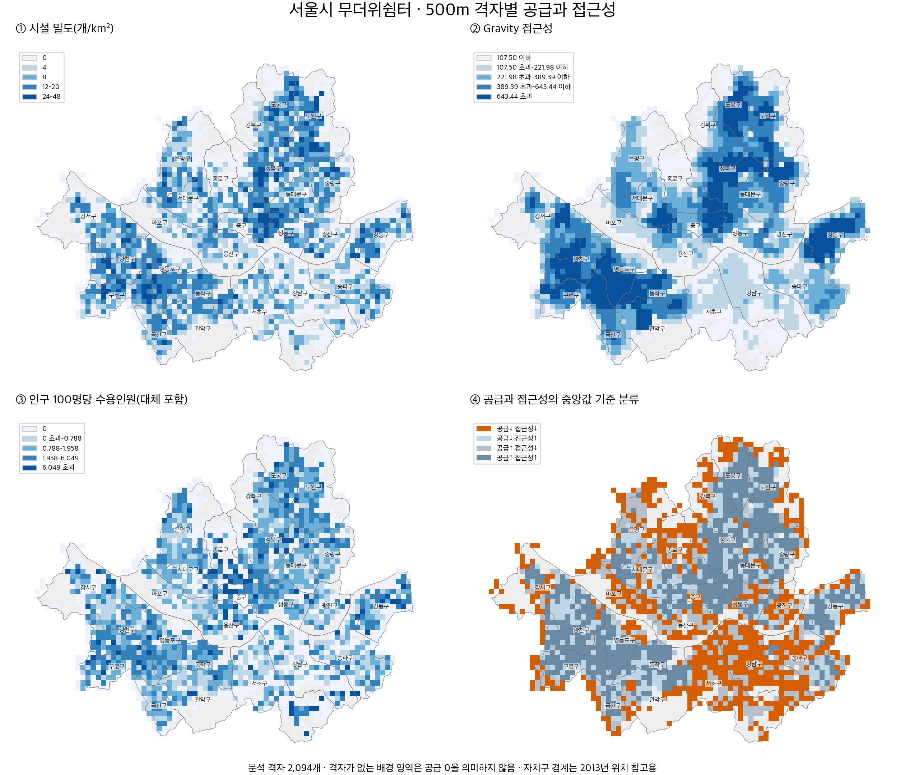
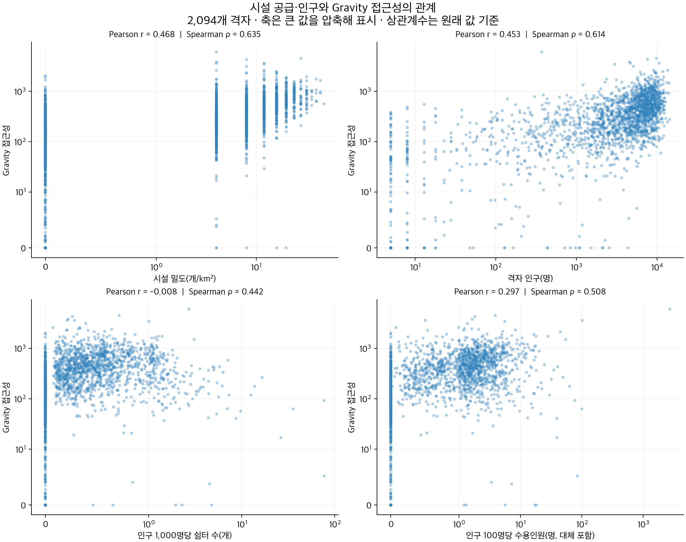

서울시 무더위쉼터의 공간적 접근성과 지역 간 격차
Spatial Accessibility and Population-Based Shelter Supply in Seoul
분석 결과 통합본 · 2026년 11월 1일 · 원 분석 코드와 저장 자료 대조 반영
01. Research Overview — 연구 질문과 분석 대상
무더위쉼터의 지역 간 공급 차이를 평가하려면 시설의 공간적 분포와 주민이 접근할 수 있는 기회를 함께 살펴야 한다. 같은 수의 시설이 있어도 주변 인구 규모, 수용인원, 보행거리에 따라 공급과 접근성의 의미가 달라지기 때문이다.
본 분석은 제공된 서울시 500m 격자와 무더위쉼터 자료를 이용해 다음 질문을 검토한다.
- 시설 밀도와 Gravity 접근성은 어떤 관계를 보이는가?
- 인구 대비 시설 수·수용인원이 높은 격자는 접근성도 높은가?
- 공급과 접근성이 모두 상대적으로 낮은 격자는 어디에 분포하는가?
분석 단위는 500m 격자 2,094개, 격자 인구 합계는 9,559,427명이다. 전체 시설 3,878개 중 3,877개가 분석 격자에 포함되었다. 이 범위에서 인구 1,000명당 쉼터는 0.406개, 인구 100명당 수용인원은 1.830명이다. 수용인원에는 기존 자료의 결측 대체값이 포함되어 있으므로 확정된 실제 공급량과 구분해야 한다.
02. Data & Preprocessing — 자료와 검증
2.1. 사용 자료
| 자료 | 출처·기준시점 확인 | 주요 속성과 용도 |
|---|---|---|
무더위쉼터 원자료 및 shelters.geojson | 행정안전부 무더위쉼터 API. 원 코드의 호출 경로는 DSSP-IF-10942. 분석 대상 3,878개 레코드의 YEAR 필드는 모두 2026 | 좌표, 시설 ID, 수용인원, 대체 여부. 내부 시설 수·수용인원 및 Gravity 계산 |
| 2024년 500m 격자 인구 CSV | 파일의 year 필드가 2024임을 확인. 원 제공기관·다운로드 주소는 미확인 | 격자 ID와 총인구 항목 to_in_001. 인구 대비 공급의 분모 |
원 500m 격자 경계 및 grid.geojson | 원 경계 파일은 grid_다사_500M.shp. 제공기관·경계 기준연도는 미확인 | 격자 ID, 경계, pop, gravity, shelter_count_15min. 결과 비교의 공간 단위 |
| 서울 행정동 경계 | 원 코드의 bnd_dong_seoul.shp. 제공기관·기준연도 미확인 | 행정동 경계를 합쳐 서울 범위를 만들고 시설·격자를 선정 |
| 보행 네트워크 | 원 노트북에서 OpenStreetMap 도로망으로 기재한 seoul_walk.graphml. 추출일·생성 조건은 미확인 | 노드와 길이 속성. 네트워크 최단거리 계산 |
| 지도 배경의 서울 자치구 경계 | southkorea/seoul-maps의 KOSTAT 2013 자료 | 지도 위치와 격자 중심점의 자치구 위치 참고용 |
원 분석 노트북 re.ipynb의 처리 과정과 원 CSV·경계·저장 결과를 대조했다. 쉼터의 2026년 YEAR 필드는 API 레코드의 연도이며 정확한 수집일이나 모든 속성의 동시 조사일을 보장하지 않는다. 2024년 인구와 시점이 다르므로 결과를 특정 연도의 동시점 공급률로 단정하지 않는다. 배경 경계는 현행 행정구역의 정확성을 보장하지 않으며, 경계에 걸친 격자의 인구를 자치구별로 배분하지 않았다.
2.2. 원 분석의 전처리 순서
- 좌표와 서울 범위: API의 경도·위도를 숫자로 변환하고 좌표 결측을 제거했다. 경도 124–132도·위도 33–39도 범위를 확인한 뒤, 행정동 경계를 합친 서울 범위와 교차하는 시설을 추출했다. 공간 분석은 EPSG:5179에서 수행했다.
- 수용인원: 이용가능인원
USE_PSBL_NMPR를 숫자로 변환했다. 양수 관측값의 중앙값 30명으로 결측 또는 0 이하 값을 대체했다. 이번 원자료 대조에서는 결측 941개·0 이하 0개였고, 최종 시설 ID·수용인원·대체 플래그가shelters.geojson과 전부 일치했다. - 격자·인구: 원 격자의 ID 중복을 제거한 뒤 서울 범위와 교차하는 2,634개 격자를 선택했다. 격자를 서울 경계로 잘라내지는 않았다. 인구 CSV에서 2024년 총인구 항목을 선택하고 격자 ID로 결합했다. 인구 결측 521개와 실제 0인 19개를 제외해 양의 인구 격자 2,094개를 최종 분석 대상으로 삼았다. 코드에서는 결측을 임시로 0으로 채우면서 별도 결측 플래그를 유지하므로 결측과 실제 0을 구분할 수 있다.
- 네트워크: 격자 중심점과 시설을 각각 가장 가까운 네트워크 노드에 연결했다. 보행망은 무방향 그래프로 사용하고, 같은 노드에 연결된 시설의 수용인원을 합산했다. 각 출발 노드에서 길이 속성으로 최단거리를 계산해 2,000m 이내의 시설을 Gravity에 반영했다. 중심점·시설과 연결 노드 사이의 별도 접속거리는 더하지 않았다.
- 15분 이용권: 보행속도 시속 4km를 가정해 15분을 1,000m로 환산하고, 같은 네트워크에서 해당 거리 이내의 시설을 셌다. Gravity의 탐색거리 2,000m와 다르다.
- 웹 자료와 추가 지표: 분석 결과를 경위도 GeoJSON으로 내보냈다. 추가 분석에서는 이 파일의 시설 위치를 최종 2,094개 격자에 다시 공간 결합해 내부 시설 수·밀도·인구 대비 공급을 계산했다.
원자료로 격자 선정과 수용인원 처리를 다시 확인했으며 최종 2,094개 격자의 ID·인구가 모두 일치했다. 저장된 grid_gravity.gpkg와 웹 격자 자료의 Gravity도 2,094개 전부 일치했다. 이는 원 코드·원자료·저장 결과의 대조이며, 전체 네트워크 최단경로를 이번에 다시 계산하거나 현실의 보행 가능성을 현장 검증한 것은 아니다.
2.3. 추가 공간 결합과 인구 검증
분석에 사용한 두 파일은 모두 CRS84 경위도 자료다. 격자와 시설의 도형은 유효하며, 각 자료의 web_id 중복은 없었다. 시설 포인트를 격자 경계와 새로 공간 결합한 결과, 3,877개가 각각 하나의 격자 내부에 포함되었다. 경계점과 중복 매칭은 없었다. 공간 인덱스 방식과 별도로 모든 시설을 모든 격자와 직접 비교해 격자별 시설 수가 일치함을 확인했다.
미매칭 시설은 소나무언덕잠실본동도서관 1개이며, 수용인원은 105명이다. 원 격자와 대조한 결과 인구 0인 다사62b44b에 있어 최종 분석 격자에서 제외된 것으로 확인했다. 가장 가까운 포함 격자의 경계까지는 약 46.25m다. 내부 공급 집계에서는 임의 재배정하지 않았다. 반면 기존 Gravity는 서울 범위 내 시설 3,878개를 사용하므로 이 도서관도 네트워크 거리 조건을 만족하는 출발지의 접근성에 기여할 수 있다. 두 지표의 집계 범위가 다른 데 따른 차이다.
EPSG:5179에서 검증한 격자 면적은 모두 약 250,000m²다. 인구는 모두 양수이며 최소 5명이다. 인구 0·음수·결측 격자는 없었고, 재사용 계산에서는 이런 경우 인구 대비 비율을 null로 처리한다.
2.4. 수용인원과 자료 품질
현재 capacity 값 자체에 null·비수치·음수·0은 없었다. 그러나 941개 시설(24.27%)은 capacity_imputed=True이며 모두 30명으로 저장되어 있었다. 원 코드와 원자료 대조에서 관측 양수 중앙값 30명 대체를 확인했다. Gravity와 인구 대비 수용인원은 같은 처리 결과를 사용한다. 대체의 일관성은 확인했지만 추정값이 실제 수용인원이라는 뜻은 아니다.
대체 시설이 포함된 격자는 467개다. 기본 지표에는 저장된 대체값을 유지하고, 관측분만 합산한 부분합 및 대체 시설이 없는 격자의 지표를 별도로 보존했다. 같은 좌표에 다른 ID로 등록된 시설은 28개 좌표·56개 시설이다. 동일 건물 내 시설인지 중복 등록인지 확인되지 않아 임의 삭제하지 않았다.
수용인원 9,999명(보라매공원), 4,801명(관악중앙도서관), 2,789명(북아현문화체육센터) 등 큰 값은 원자료 확인 대상이다. 오류로 확정할 근거가 없어 기본 계산에 유지했다.
03. Indicators — 지표 정의
3.1. Density — 시설 밀도
| 항목 | 설명 |
|---|---|
| 계산식과 변수 | Dᵢ는 시설 밀도, Nᵢ는 격자 i 내부 시설 수, Areaᵢ는 격자 면적(km²)이다. 모든 격자의 면적이 0.25km²이므로 Nᵢ의 4배다. |
| 분석 단위·공간 단위 | 관측 단위는 양의 인구를 가진 500m 격자 2,094개다. 시설 포인트를 각 격자 폴리곤에 집계하며, 결과 단위는 개/km²다. |
| 해석 | 높으면 시설이 공간적으로 밀집하고 낮으면 드물다. 0이면 내부 시설이 없다. 인구당 충분성이나 격자 밖 시설 접근 가능성은 설명하지 않는다. |
| 자료·전처리 | 시설 좌표와 격자 경계를 공간 결합해 Nᵢ를 계산했다. 시설 0개 격자도 포함하며 미매칭 1개 시설은 제외했다. 시설 수만 사용하므로 수용인원 대체는 영향을 주지 않는다. shelter_count_15min은 내부 시설 수와 달라 사용하지 않았다. |
격자당 시설 수 평균은 1.851개, 최대 밀도는 48개/km²다. 시설 수와 밀도는 일정한 비례 관계지만, 수용인원이나 이용조건은 반영하지 않는다.
3.2. Gravity-based Accessibility — 기존 보행 접근성
원 분석 코드에서 확인한 정의는 다음과 같다.
| 항목 | 설명 |
|---|---|
| 계산식과 변수 | Aᵢ는 격자 i의 접근성, Sⱼ는 시설 j의 수용인원, dᵢⱼ는 격자 중심과 시설을 연결한 최근접 노드 사이 최단거리(m)다. β=ln(2)/500이며 500m 늘 때 시설의 기여도가 절반이 된다. 2,000m 이내만 합산한다. |
| 분석 단위·공간 단위 | 결과는 500m 격자별 점수이나 계산 범위는 격자 경계를 넘는 네트워크 거리권이다. 2,094개 격자의 2,086개 고유 출발 노드에서 계산하고, 시설 3,878개를 탐색 대상으로 사용했다. |
| 해석 | 높으면 더 가깝거나 수용인원이 큰 시설에 대한 접근 기회가 크다. 0은 이 모형의 거리권에서 기여 시설이 없다는 뜻이다. 실제 이용률·충족률·안전한 보행 여부를 뜻하지 않는다. |
| 자료·전처리 | OpenStreetMap 기반으로 기재된 저장 보행망, 격자 중심점, 시설 위치·수용인원을 사용했다. EPSG:5179로 통일하고 최근접 노드에 연결한 뒤 무방향 최단경로를 구했다. 동일 노드 시설의 수용인원을 합산하고 결측 941개는 30명으로 대체했다. |
기존 점수를 이번 비교 분석에 사용했으며 저장된 격자 결과와 일치함을 확인했다. 평균은 412.449, 중앙값은 296.769, 0인 격자는 42개다. 점수는 거리감쇠된 수용인원의 합으로, 인구로 나눈 지표가 아니다. 출발점과 시설의 노드 연결 오차, 수용인원 극단값, 운영시간에 민감하다.
3.3. 인구 1,000명당 시설 수
| 항목 | 설명 |
|---|---|
| 계산식과 변수 | Pᵢ는 인구 1,000명당 시설 수, Nᵢ는 격자 내부 시설 수, Popᵢ는 격자 거주 인구다. |
| 분석 단위·공간 단위 | 500m 격자 2,094개를 비교하며 단위는 개/인구 1,000명이다. 분자·분모 모두 같은 격자 범위를 사용한다. |
| 해석 | 높으면 거주 인구에 비해 내부 시설이 많고 낮으면 적다. 소인구 격자는 시설 1개만으로도 매우 높아질 수 있다. 적정 시설 수나 실제 서비스 부족을 직접 판정하지 않는다. |
| 자료·전처리 | 공간 결합으로 산출한 시설 수와 2024년 총인구를 사용했다. 인구 결측·0을 제외하고 시설 0개인 양의 인구 격자는 0으로 계산했다. 수용인원 대체는 영향을 주지 않는다. |
분석 범위 전체 비율은 0.405568개/1,000명이고 격자 중앙값은 0.281631개다. 인구가 각각 13명인 두 격자는 시설 1개로 76.923개/1,000명이므로 분모의 크기도 함께 읽어야 한다.
3.4. 인구 100명당 수용인원
| 항목 | 설명 |
|---|---|
| 계산식과 변수 | Cᵢ는 인구 100명당 수용인원, Sⱼ는 내부 시설 j의 수용인원, j∈i는 격자 i 내부 시설 집합, Popᵢ는 거주 인구다. |
| 분석 단위·공간 단위 | 양의 인구를 가진 500m 격자 2,094개를 비교한다. 단위는 수용 가능 인원(명)/인구 100명이다. |
| 해석 | 높으면 인구 대비 내부 수용 규모가 크고 낮으면 작다. 100을 넘을 수 있으며 주민 이용률·실제 충족률을 뜻하지 않는다. 대형 시설 또는 작은 인구가 값을 크게 만들 수 있다. |
| 자료·전처리 | 시설 위치·수용인원과 2024년 총인구를 사용했다. 내부 시설의 수용인원을 합산하고 인구로 나눴다. Gravity와 같은 중앙값 대체 수용인원을 사용했으며, 관측분만의 부분합과 대체 시설이 없는 격자의 결과를 보조적으로 분리했다. |
전체 비율은 대체 포함 1.830172명/100명, 관측분만 합산하면 1.534862명/100명이다. 후자는 불완전한 부분합이며 실제 총수용인원으로 해석하지 않는다. 기본 지표의 격자 중앙값은 0.788380명이다. 격자 밖 시설 이용과 실제 운영 조건은 반영하지 않는다.
3.5. 비교 방법
선형 관계를 보는 Pearson 상관계수와 순위 관계를 보는 Spearman 계수를 함께 계산했다. 극단값과 소인구 격자의 영향을 확인하기 위해 인구 100명 이상, 큰 수용인원 시설이 없는 격자, 대체 수용인원이 없는 격자로 나눈 민감도 분석도 수행했다.
공급과 접근성의 상대 분류에는 각각 중앙값을 사용했다. 중앙값 미만은 낮음, 이상은 높음이다. 이는 정책상 적정 공급 기준이 아니다. 공간적으로 인접한 격자들이 독립적이라고 가정하기 어려워 통상적인 p값으로 통계적 유의성을 주장하지 않는다.
04. Visualization & Results — 시각화와 분석 결과
4.1. 공급과 접근성의 분포

그림 1. 시설 밀도, 기존 Gravity, 인구 대비 수용인원 및 두 지표의 상대 분류. 인구 대비 수용인원은 대체값을 포함한다. 격자가 없는 배경 영역은 공급 0을 의미하지 않는다. 지도 범례의 수치는 표시를 위해 반올림했다.
시설 밀도·Gravity·인구 대비 수용인원 지도는 낮은 값의 연한 파랑에서 높은 값의 진한 파랑으로 표현했다. Gravity 지도는 107.50·221.98·389.39·643.44를 상한으로 하는 5개 구간을 사용한다. 시설 밀도와 인구 대비 수용인원은 기존 표시 구간을 유지한다. 네 유형 지도는 공급과 접근성이 모두 낮은 격자를 주황(#D55E00)으로 강조하고, 나머지 유형은 차분한 파랑·회색으로 구분했다. 중앙값 기준의 분석 분류는 바꾸지 않았다.
| 지표 | 분석 범위 전체 비율¹ | 격자 중앙값 | 격자 단순평균 |
|---|---|---|---|
| 인구 1,000명당 쉼터 수 | 0.405568 | 0.281631 | 0.562606 |
| 인구 100명당 수용인원 — 대체 포함 | 1.830172 | 0.788380 | 3.230760 |
| 인구 100명당 수용인원 — 관측분만 | 1.534862 | 0.449384 | 2.901628 |
¹ 분석 범위 내 공급 총합 / 인구 총합으로 계산한다. 미매칭 시설은 분자에서 제외했다. 격자 비율의 단순평균과 구분해야 한다.
공간 결합된 시설의 수용인원 합은 174,954명으로 관측분 146,724명, 대체분 28,230명이다. 격자당 시설 수 평균은 1.851개, 최대는 12개로 최대 밀도는 48개/km²다. 시설이 없는 격자는 697개(33.29%)이며, 해당 인구는 1,303,693명(13.64%)이다.
기존 15분 이용권 속성의 격자 평균은 11.296개이며, 그 속성이 0인 격자는 196개다. Gravity가 0인 격자는 42개다. 내부 시설 유무, 이용권 내 시설 수, 수용인원을 반영한 Gravity는 서로 다른 지표이므로 각각의 0을 같은 의미로 해석하지 않는다.
그림 1① 시설 밀도 지도 해석
- 높고 낮은 곳: 구로구 위치 참고 격자
다사42a44a는 시설 12개·48개/km²로 최대다. 중구다사58a51a, 양천구다사43b45a, 성북구다사58b55b는 각각 44개/km²다. 내부 시설 0개인 697개 격자는 강남·서초 일부를 포함해 여러 지역에 분포한다. 자치구 이름은 2013년 경계에 격자 중심점을 포함시킨 위치 참고이며 자치구 전체 순위가 아니다. - 다른 지표와의 패턴: 밀도와 Gravity의 순위 상관은 0.635로 양수지만, 최대 밀도 격자의 Gravity는 561.044로 최대가 아니다. 반대로 동작구 보라매공원 위치 참고 격자는 밀도 4개/km²인데 Gravity는 전체 최대다. 시설 수의 집중과 접근 기회는 서로 다르다.
- 도시 구조·토지이용 해석: 밀집 주거지의 경로당·주민센터 등 기존 생활시설 분포와 쉼터 지정이 맞물릴 수 있다. 행정안전부의 시설 유형 설명도 쉼터가 공공·민간·야외·노인이용시설에 걸쳐 운영됨을 제시한다. 따라서 밀도는 건물 밀집 자체뿐 아니라 어떤 기존 시설을 쉼터로 지정했는지에 영향을 받을 수 있다는 해석이 가능하다.
- 이 결과로 설명하지 못하는 점: 해당 격자가 실제로 어떤 주거 유형인지, 개방시설이 얼마나 되는지, 주민의 이용수요가 충족되는지는 시설 수만으로 확인할 수 없다. 토지이용·건축물·운영 정보의 직접 결합 없이 특정 주거 형태가 밀도를 높였다고 단정하지 않는다.
그림 1② Gravity 접근성 지도 해석
- 높고 낮은 곳: 최대는 보라매공원 위치 참고 격자
다사48b43b의 6,029.847이다. 인접한 동작·영등포 일대의 일부 격자도 높은 값을 보인다. 최저 0인 격자는 42개이며 은평·도봉 등의 일부 격자와 경계 부근 등에 분산한다. 위치 표현은 지도 배경에 따른 참고다. - 다른 지표와의 패턴: 동작구 위치 참고
다사49b44a는 내부 시설 0개지만 Gravity는 1,925.874로 높다. 인접 시설이 격자 경계를 넘어 기여하기 때문이다. 밀도 지도에서 0인 격자가 Gravity 지도에서도 반드시 낮지는 않다. - 도시 구조·토지이용 해석: 이 모형에서 큰 수용시설 주변은 여러 격자에 걸쳐 접근성 기여가 이어질 수 있다. 보라매공원의 입력 수용인원 9,999명은 이러한 국지적 고값을 해석할 때 먼저 검토할 요인이다. 보행망의 연결 상태, 하천·대규모 부지·단지의 출입 조건도 접근 기회 차이를 만들 수 있지만, 이들의 실제 효과를 분리해 검증한 것은 아니다.
- 이 결과로 설명하지 못하는 점: 높은 점수가 실제 개방·쾌적성·폭염 시 이용 가능성을 보장하지 않는다. 특히 공원과 실내시설의 수용인원을 같은 Sⱼ로 취급해도 되는지, 9,999명이 실제 수용 규모인지 확인이 필요하다. 낮은 점수의 원인도 시설 부재와 네트워크 누락·연결 오차로 나누어 추가 점검해야 한다.
그림 1③ 인구 대비 수용인원 지도 해석
- 높고 낮은 곳: 보라매공원 격자는 2,695.148명/100명으로 최대이고, 관악중앙도서관 격자
다사50b41a는 101.889명/100명이다. 최저 0은 내부 시설이 없는 697개 격자다. 강남구 위치 참고다사60a44a는 인구 12,163명·내부 시설 0개로 그 사례다. - 다른 지표와의 패턴: 같은 내부 시설 집합을 쓰기 때문에 0인 위치는 밀도 지도와 일치한다. 양수 구간의 순위는 수용 규모와 인구 때문에 달라진다. 강남구 위치 참고
다사66a41a는 100명당 수용인원이 100명이지만 Gravity는 62.833으로 낮아, 지역 내부 비율과 보행권 공급이 일치하지 않는 사례다. - 도시 구조·토지이용 해석: 공원·도서관 등 큰 시설이 있으면서 거주 인구가 적은 격자는 비율이 높아질 수 있고, 고밀 주거지는 비슷한 수용 규모라도 인구 분모가 커져 비율이 낮아질 수 있다. 이는 이 지표의 작동 원리에 따른 해석이며, 거주 인구가 적은 곳의 실제 이용수요도 적다는 뜻은 아니다.
- 이 결과로 설명하지 못하는 점: 소인구·대형 시설·수용인원 대체가 극단값을 만들 수 있다. 생활인구, 외부 방문객, 인접 격자 이용 및 연령별 수요가 없어 실제 충족률과 정책상 적정량은 산출하지 못한다.
그림 1④ 공급·접근성 유형 지도 해석
- 높고 낮은 곳: 두 지표 모두 낮은 721개 격자 중 가장 큰 연결 구역은 주로 강남·서초·송파 일대의 242개 격자다. 종로·성북·서대문·은평 일대의 49개 격자로 이어진 구역과, 주로 마포 일대의 32개 격자로 이어진 구역도 확인된다. 두 지표 모두 높은 격자는 721개다.
- 다른 지표와의 패턴: 내부 공급이 낮지만 Gravity는 높은 326개 격자와, 그 반대인 326개 격자가 함께 나타난다. 보행 접근권의 공간 범위가 격자 내부보다 넓고, 공급 비율에는 인구가 분모로 들어가므로 서로 다른 분류가 가능하다.
- 도시 구조·토지이용 해석: 서울시의 동남권 설명은 이 권역에 주거·경제 기능과 대규모 아파트 단지가 함께 있음을 제시한다. 이러한 복합적 도시 구조에서는 단지 규모·외부 출입구·비주거용지·기존 개방시설 배치가 지표에 서로 다르게 작용할 가능성이 있다. 이는 가능한 설명이며 현재의 연결 구역을 아파트 단지 탓으로 귀속한 결과는 아니다.
- 이 결과로 설명하지 못하는 점: 중앙값 미만이라는 이유만으로 실제 부족·불평등·열위험을 확정하지 않는다. 동일 자치구 안에서도 유형이 섞이고, 연결 구역은 선택한 인접성·분류 기준에 따라 달라진다. 시설 배치의 역사나 토지이용의 독립 효과를 주장하려면 추가 자료와 모형이 필요하다.
4.2. 지표 간 관계

그림 2. 점 하나는 격자 하나다. 큰 값을 함께 볼 수 있도록 축을 압축했고, 0도 표시했다. 상관계수는 압축 전 원래 값으로 계산했다. 순서대로 시설 밀도·인구·인구 대비 시설 수·인구 대비 수용인원과 Gravity의 관계다.
네 산점도는 모두 반투명 파랑(#3182bd)으로 표시했다. 점이 겹칠수록 진하게 보여 격자들의 밀집을 확인할 수 있다. 점 색상은 별도의 Gravity 구간을 나타내지 않는다.
| Gravity와 비교한 지표 | Pearson r | Spearman ρ |
|---|---|---|
| 시설 밀도 | 0.468 | 0.635 |
| 격자 인구 | 0.453 | 0.614 |
| 인구 1,000명당 시설 수 | −0.008 | 0.442 |
| 인구 100명당 수용인원 — 대체 포함 | 0.297 | 0.508 |
| 인구 100명당 수용인원 — 관측분만 | 0.296 | 0.458 |
| 15분 이용권 내 시설 수 | 0.648 | 0.865 |
시설 밀도가 높은 격자는 Gravity도 높은 경향을 보이지만 두 지표가 일치하지는 않는다. 인구 대비 시설 수는 Pearson이 거의 0인 반면 순위 상관은 양수다. 따라서 단일 선형 계수만으로 관계가 없다고 판단하기 어렵다.
그림 2① 시설 밀도–Gravity 산점도 해석
- 높고 낮은 값의 위치: 구로구 위치 참고
다사42a44a는 밀도 48·Gravity 561.044이고, 보라매공원 격자는 밀도 4·Gravity 6,029.847이다. 동작구 위치 참고다사49b44a는 밀도 0·Gravity 1,925.874다. 산점도 자체에는 위치 정보가 없으므로 이러한 장소 해석은 지도 및 격자 ID 대조 결과다. - 비슷하거나 다른 패턴: 순위 상관 0.635로 전반적으로 함께 높아지는 경향이 있지만, 같은 밀도에서도 Gravity가 넓게 분산한다. 내부 시설 수가 같아도 수용 규모·주변 시설·보행거리가 달라지기 때문이다.
- 도시 구조·토지이용 해석: 작은 생활시설이 모인 곳과 대형 시설 주변은 같은 밀도에서도 다른 접근성 점수를 보일 수 있다. 이는 시설 규모와 네트워크를 함께 반영하는 Gravity의 구조에 부합하는 해석이며, 개별 지역의 시설 유형별 효과를 분리 추정한 것은 아니다.
- 설명할 수 없는 점: 상관은 시설을 늘렸을 때의 인과효과가 아니다. 두 지표는 같은 시설 자료를 일부 공유하며, 실제 운영 조건과 네트워크 정확도가 검증되지 않은 부분이 남아 있다.
그림 2② 인구–Gravity 산점도 해석
- 높고 낮은 값의 위치: 중구 위치 참고
다사58a51a는 인구 14,094명·Gravity 913.515인 반면, 송파구 위치 참고다사63b45b는 인구 13,487명·Gravity 245.538이다. 인구 규모가 비슷해도 접근성은 다르다. 인구 371명인 보라매공원 격자의 Gravity가 전체 최대라는 반대 사례도 있다. - 비슷하거나 다른 패턴: Pearson 0.453·Spearman 0.614로 전반적인 양의 관계가 있으나 같은 인구 수준에서도 점수가 크게 갈린다. Gravity에는 인구 분모나 시설 간 수요 경쟁이 없으므로 인구가 많을수록 주민 1인당 서비스가 충분하다고 해석할 수 없다.
- 도시 구조·토지이용 해석: 거주 인구와 생활시설이 함께 밀집하면 두 값이 동시에 높아질 수 있다. 반면 거주자가 적은 공원·업무·상업 기능 중심 공간에도 큰 시설이 들어설 수 있다. 현재 자료는 거주 인구이므로 낮 시간 도시 활동과 수요를 직접 나타내지 않는다.
- 설명할 수 없는 점: 인구가 시설 입지를 유발했는지, 다른 도시적 요인이 두 변수를 함께 높였는지는 알 수 없다. 생활인구·고령인구·시설 이용자 자료 없이 실제 수요 충족과 취약집단의 형평성을 판단하지 않는다.
그림 2③ 인구 1,000명당 시설 수–Gravity 산점도 해석
- 높고 낮은 값의 위치: 서초구 위치 참고
다사63a40b,다사60a39a는 각각 인구 13명·시설 1개여서 76.923개/1,000명으로 공동 최대지만 Gravity는 5.186·92.594다. 반대로 관악구 위치 참고다사49a43a는 0.073692개/1,000명으로 양수 격자 중 최저인데 Gravity는 2,603.085다. - 비슷하거나 다른 패턴: Pearson −0.008에 비해 Spearman은 0.442다. 순위 차원에서는 양의 관계가 있으나 극단적인 비율값 때문에 선형 관계가 약하다. 인구 100명 이상만 비교해도 Pearson 0.038·Spearman 0.341이므로 하나의 계수만으로 두 지표가 동일하거나 무관하다고 단정할 수 없다.
- 도시 구조·토지이용 해석: 거주지가 드문 공간은 시설 1개만으로 비율이 커질 수 있고, 인구가 많은 주거 격자는 내부 시설이 적어도 인접 시설을 이용할 수 있다. 이 차이는 격자 경계와 거주 인구 분포가 두 지표에 다르게 작용한 것으로 해석할 수 있다.
- 설명할 수 없는 점: 높은 비율이 실제 공급의 충분성을 보장하지 않는다. 소인구 격자의 토지이용을 직접 검증하지 않았고, 시설 규모·운영 조건도 이 시설 수 비율에는 반영되지 않는다.
그림 2④ 인구 100명당 수용인원–Gravity 산점도 해석
- 높고 낮은 값의 위치: 보라매공원 격자는 수용인원 비율 2,695.148·Gravity 6,029.847로 두 값이 모두 매우 높다. 강남구 위치 참고
다사66a41a는 비율 100·Gravity 62.833으로 서로 다른 양상이다.다사60a44a는 내부 비율 0·Gravity 130.565로 둘 다 중앙값보다 낮다. - 비슷하거나 다른 패턴: Pearson 0.297·Spearman 0.508로 양의 관계가 있지만, 수용인원 127명 초과 시설이 있는 격자를 제외하면 Pearson은 0.020으로 달라진다. 원래 수치의 선형 관계는 큰 시설에 민감하며 순위 관계와 구분해야 한다.
- 도시 구조·토지이용 해석: 큰 시설은 내부 공급 비율을 높이는 동시에 주변 격자의 Gravity에도 기여할 수 있다. 공원이나 도서관처럼 시설 기능과 거주 인구가 공간적으로 일치하지 않는 경우에는 두 지표의 차이가 커질 가능성이 있다. 이는 지표의 공간 범위와 분모 차이에 따른 해석이다.
- 설명할 수 없는 점: 두 지표가 같은 수용인원 자료를 공유하므로 상관을 독립적인 검증으로 보지 않는다. 9,999명 같은 값의 정확성, 실내외 시설의 비교 가능성, 결측 대체, 실제 이용 제한은 별도 확인이 필요하다.
4.3. 저공급·저접근성 격자
수용인원 비율 중앙값 0.788380명/100명과 Gravity 중앙값 296.769217을 기준으로 비교했다.
| 인구 대비 수용인원 | Gravity | 격자 수 | 인구 |
|---|---|---|---|
| 낮음 | 낮음 | 721 | 1,849,175 |
| 낮음 | 높음 | 326 | 1,922,463 |
| 높음 | 낮음 | 326 | 1,104,867 |
| 높음 | 높음 | 721 | 4,682,922 |
두 지표가 모두 낮은 격자는 전체의 34.43%, 해당 인구는 분석 인구의 19.34%다. 721개 중 수용인원 대체 시설이 포함된 격자는 12개다. 내부 공급이 낮아도 Gravity가 높은 격자 326개는 격자 밖 시설의 접근 기회가 중요함을 보여준다. 다만 개별 격자에서 차이가 발생한 원인은 별도의 시설·거리 검토가 필요하다.
변을 맞댄 저공급·저접근성 격자를 연결하면 144개 구역으로 나뉘며, 74개는 단독 격자다. 대각선으로 모서리만 닿는 경우는 제외했다. 가장 큰 구역은 주로 강남·서초·송파 일대에 걸친 242개 격자·883,671명이다. 이는 대상 721개 격자의 33.56%, 해당 분류 인구의 47.79%다.
두 번째 구역은 종로·성북·서대문·은평 일대의 49개 격자·31,933명, 세 번째는 주로 마포 일대의 32개 격자·177,026명이다. 위치 표현은 2013년 경계와 격자 중심점을 이용한 참고이며 현행 자치구 전체에 대한 평가가 아니다. 이 연결 구역은 공간적 연속성의 기술적 요약이며 통계적으로 유의한 군집 판정이 아니다.
05. Findings & Limitations — 해석과 한계
5.1. 주요 발견
첫째, 시설 밀도와 Gravity는 양의 관계를 보이지만 측정하는 대상이 다르다. 밀도는 시설의 공간적 집중, Gravity는 시설 규모와 이동거리를 반영한 접근 기회를 나타내므로 한 지표로 다른 지표를 대체하기 어렵다.
둘째, 인구 대비 공급량을 함께 보면 시설 수나 밀도만으로 드러나지 않는 차이를 확인할 수 있다. 특히 내부 공급은 낮지만 Gravity가 높은 격자와, 내부 공급이 높아도 Gravity가 낮은 격자가 각각 존재한다.
셋째, 공급과 접근성이 모두 상대적으로 낮은 격자는 연속된 구역과 단독 격자로 함께 나타난다. 연결 격자 수가 적더라도 인구가 더 많을 수 있으므로 면적이나 격자 수만으로 시설 설치 우선순위를 정해서는 안 된다.
5.2. 극단값과 민감도
인구가 각각 13명인 다사63a40b, 다사60a39a는 시설이 1개여서 1,000명당 시설 수가 76.923개로 공동 최대다. 이는 시설이 많이 집중되었다는 의미가 아니라 작은 분모의 영향이다.
보라매공원 격자 다사48b43b는 인구 371명, 수용인원 9,999명으로 100명당 수용인원이 2,695.148명이다. 해당 시설 한 곳만 제외하는 검토 시나리오에서 분석 범위 전체 수용인원 비율은 1.830172에서 1.725574명/100명으로 낮아진다. 이는 수정된 참값이 아니라 큰 값의 영향을 보여주는 시나리오다.
관측 수용인원의 Q3+3IQR인 127명을 초과하는 시설은 126개다. 이 시설이 포함된 격자 전체를 비교 표본에서 제외하면 수용인원 비율과 기존 Gravity의 Pearson은 0.297에서 0.020으로, Spearman은 0.508에서 0.465로 변한다. 선형 관계가 큰 시설에 민감하다는 점을 보여주지만, 큰 시설이 오류라는 증거는 아니다. 이 비교에서는 Gravity를 재계산하지 않았다.
5.3. 해석의 한계
- 자료의 기준시점: 인구는 2024년, 쉼터 레코드 연도는 2026년으로 시점이 다르다. 인구·원 경계의 제공기관, 네트워크 추출일, 시설의 정확한 수집일은 추가 확인이 필요하다.
- 수용인원 대체: 941개 시설에 중앙값 30명이 대체되어 있다. Gravity와 공급 지표의 처리 일관성은 확인했지만 실제 시설 규모를 복원한 것은 아니다.
- 시설 이용 조건: 운영시간·개방 여부·중복 등록 가능성·실제 이용수요를 검증하지 못했다.
- 공간 단위와 분모: 격자 경계 및 소인구가 비율과 순위에 영향을 준다. 격자 내부 공급량은 격자 밖 시설 이용을 반영하지 않는다.
- 수요와 형평성: 총인구를 사용했으며 고령자 등 취약집단의 분포, 시설 간 수요 경쟁, 낮 시간 생활인구는 반영하지 않았다.
- 보행 접근성: 원 코드와 저장 결과를 대조했지만 네트워크의 추출 범위·완전성·현실의 통행 가능성을 검증하지 못했다. 최근접 노드 접속거리, 경사·그늘·단지 출입 조건 등 실제 보행 조건을 충분히 반영하지 않는다.
- 상대 분류: 중앙값 기준의 낮음은 정책상 부족이나 건강위험을 확정하지 않는다. 공간적 연결 구역도 유의한 위험 군집으로 해석하지 않는다.
5.4. 결론
서울시 무더위쉼터 공급을 평가할 때는 시설 밀도, 보행 접근성, 인구 대비 공급을 함께 살펴야 한다. 이번 자료에서는 세 관점이 관련성을 보이면서도 서로 다른 격자들을 구분했다. 공급과 접근성이 모두 상대적으로 낮은 721개 격자는 추가 검토 후보이며, 시설 개방 조건·취약인구·수용인원 원자료를 확인한 뒤 구체적인 공급 우선순위를 판단해야 한다.
추가 검증 사항
- 인구·원 경계의 제공기관과 다운로드 주소, 시설 수집일과 보행망 생성 조건을 보완한다.
- 큰 수용인원 값과 동일 좌표 시설을 원 제공기관 자료에서 확인하고 시설 운영시간·이용 제한을 반영한다.
- 토지이용·건축물·단지 출입구·지형 자료를 추가해 도시 구조와의 관계를 검증한다. 현재 도시 구조에 대한 설명은 위치 참고와 가능한 작동 원리를 제시한 해석이다.